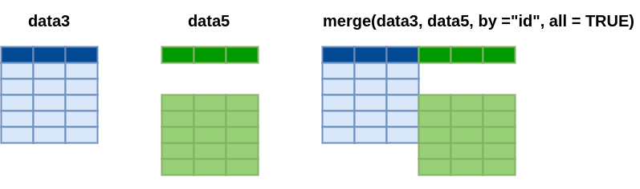

Fusión de datos
Métodos y Simulación Estadística
Una de las necesidades importante en el manejo de bases de datos la conforma el agregar mas registros o filas a una base de datos o de agregar nuevas variables.
Esta etapa implica combinar datos provenientes de múltiples fuentes en una única estructura de datos, permitiendo un análisis más completo y holístico. La fusión de datos se utiliza comúnmente cuando se trabaja con conjuntos de datos que comparten una o más variables en común, como identificadores únicos, fechas o categorías.
En R, uno de los paquetes más utilizados para
realizar la fusión de datos es el paquete dplyr, que forma
parte del grupo de paquetes agrupados en tidyverse
En este caso se presentan dos casos :
- Adicionar registros a una base de datos
- Adicionar variables a una base de datos
Adicionar registros

Ejemplo
Para ilustrar el primer caso tomaremos una muestras pequeñas de la base rotacion contenida en paqueteMETODOS
data1
Esta base contiene información de tres variables, correspondientes a 6 personas
library(paqueteMETODOS)
data("rotacion")
id = 1:1470
data= data.frame(id, rotacion)
data1 = data[1:6,c(2,3,4,5)]
data1 Rotación Edad Viaje.de.Negocios Departamento
1 Si 41 Raramente Ventas
2 No 49 Frecuentemente IyD
3 Si 37 Raramente IyD
4 No 33 Frecuentemente IyD
5 No 27 Raramente IyD
6 No 32 Frecuentemente IyDdata2
Esta segunda base contiene las mismas tres variables pero que corresponden a otras 6 personas y deseamos juntar todos los registros ( en total 12) en una sola base de datos
library(paqueteMETODOS)
data("rotacion")
id = 1:1470
data= data.frame(id, rotacion)
data2 = data[7:12,c(2,3,4,5)]
data2 Rotación Edad Viaje.de.Negocios Departamento
7 No 59 Raramente IyD
8 No 30 Raramente IyD
9 No 38 Frecuentemente IyD
10 No 36 Raramente IyD
11 No 35 Raramente IyD
12 No 29 Raramente IyDPara unir estas dos base utilizamos la función rbind()
del paquete dplyr.
library(dplyr)
data20 = rbind(data1,data2)
data20 Rotación Edad Viaje.de.Negocios Departamento
1 Si 41 Raramente Ventas
2 No 49 Frecuentemente IyD
3 Si 37 Raramente IyD
4 No 33 Frecuentemente IyD
5 No 27 Raramente IyD
6 No 32 Frecuentemente IyD
7 No 59 Raramente IyD
8 No 30 Raramente IyD
9 No 38 Frecuentemente IyD
10 No 36 Raramente IyD
11 No 35 Raramente IyD
12 No 29 Raramente IyDAdicionar variables
En la adición de variables se presentan dos casos El primero corresponde a la unión de dos o más columnas contenidas en bases diferentes pero que deben estar ordenadas en la misma forma para que coincidan los registros.
En el segundo caso las bases de datos deben contener una llave que permita indexar sus registros.
Caso 1

Ejemplo
Para ilustrar este caso tomaremos una muestra de la data
rotacion contenida en paqueteMET para
conformar las bases data3, data4 y
data5:
library(paqueteMETODOS)
data("rotacion")
id = 1:1470
data= data.frame(id, rotacion)
data3 = data[1:10,c(1,2,3)]
data4 = data[1:10,c(1,4,5)]
data5 = data[3:12,c(1,4,5)]data3
Conformada por 10 registros y tres variables dentro de las cuales esta id que sirve en este caso para verificar que los registros están en un mismo orden.
data3 id Rotación Edad
1 1 Si 41
2 2 No 49
3 3 Si 37
4 4 No 33
5 5 No 27
6 6 No 32
7 7 No 59
8 8 No 30
9 9 No 38
10 10 No 36data4
data4 contiene además del identificador otras dos variables
data4 id Viaje.de.Negocios Departamento
1 1 Raramente Ventas
2 2 Frecuentemente IyD
3 3 Raramente IyD
4 4 Frecuentemente IyD
5 5 Raramente IyD
6 6 Frecuentemente IyD
7 7 Raramente IyD
8 8 Raramente IyD
9 9 Frecuentemente IyD
10 10 Raramente IyDEn este caso se tienen las funciones :
cbind()Utilizada para combinar dos o mas conjuntos por columnas, agregando un conjunto de columnas. Es decir pegar dos datas que presentan el mismo orden de registros
cbind(data3, data4[,2:3]) id Rotación Edad Viaje.de.Negocios Departamento
1 1 Si 41 Raramente Ventas
2 2 No 49 Frecuentemente IyD
3 3 Si 37 Raramente IyD
4 4 No 33 Frecuentemente IyD
5 5 No 27 Raramente IyD
6 6 No 32 Frecuentemente IyD
7 7 No 59 Raramente IyD
8 8 No 30 Raramente IyD
9 9 No 38 Frecuentemente IyD
10 10 No 36 Raramente IyDCaso 2

merge(). Se utiliza para combinar conjuntos de datos por columnas clave específicas, independientemente del número de filas.
data5
data5 id Viaje.de.Negocios Departamento
3 3 Raramente IyD
4 4 Frecuentemente IyD
5 5 Raramente IyD
6 6 Frecuentemente IyD
7 7 Raramente IyD
8 8 Raramente IyD
9 9 Frecuentemente IyD
10 10 Raramente IyD
11 11 Raramente IyD
12 12 Raramente IyDmerge(data3, data5, by = "id", all = TRUE) id Rotación Edad Viaje.de.Negocios Departamento
1 1 Si 41 <NA> <NA>
2 2 No 49 <NA> <NA>
3 3 Si 37 Raramente IyD
4 4 No 33 Frecuentemente IyD
5 5 No 27 Raramente IyD
6 6 No 32 Frecuentemente IyD
7 7 No 59 Raramente IyD
8 8 No 30 Raramente IyD
9 9 No 38 Frecuentemente IyD
10 10 No 36 Raramente IyD
11 11 <NA> NA Raramente IyD
12 12 <NA> NA Raramente IyDNota
En el caso de unir columnas mediante la función cbind()
, se combinan dos base de datos (data3 y
data4) de igual número de filas y que corresponde
información que corresponde a las mismas personas. Para que no parezca
la variable id repetida se quita de data4 dejando solo las columnas 2 a
3 - data4[, 2:3] - .
Para el caso de la función merge() , se requiere tener
un indice que identifique cada registro y por tanto no es necesario que
los registros en las bases a unir se encuentren ordenadas. Para ello
utilizamos las bases data3 y data5. En ellas se puede notar que la
primera presenta los registros de las personas con id del 1 al 12,
mientras que la data5 los registros correspondientes a las personas con
id del 3 al 14. Es por esta razón que se toma como base la data3 y sobre
ella se agregan los registros que coincidan al comparar su id con los de
la data5. Quedando vacíos los registros de las personas con
id 1 y 2.
Retos
Desde paqueteMETODOS puede importar las bases :
- CarreraLu22_c1F - mujeres categoría juvenil
- CarreraLu22_c1M - hombres categoría juvenil
- CarreraLu22_c2F - mujeres categoría abierta
- CarreraLu22_c2M - hombre categoría abierta
- CarreraLu22_c3F - mujeres categoría veteranos a
- CarreraLu22_c3M - hombres categoría veteranos a
- CarreraLu22_c4F - mujeres categoría veteranos b
- CarreraLu22_c4M - hombres categoría veteranos b
- CarreraLu22_c5F - mujeres categoría veteranos c
- CarreraLu22_c5M - hombres categoría veteranos c
- CarreraLu22F - mujeres
- CarreraLu22M - hombres
A partir de esta información reconstruya la data original - CarreraLuz22
library(paqueteMETODOS)
data("CarreraLuz22") # contiene todos los datos